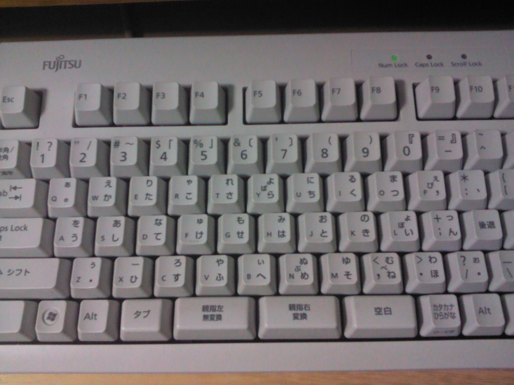

Fujitsu OASYS 100 Thumb-Shift Keyboard
The Japanese word-processor keyboard that moved the shift keys to the thumbs, giving every key three characters and keeping both hands on the home row

Overview
The Fujitsu OASYS 100, announced May 1980, was Fujitsu's first Japanese word processor. Its keyboard solved a hard problem: how to enter the dozens of kana characters needed for Japanese text without a sprawling layout. The answer was the thumb-shift keyboard. Instead of the little fingers operating conventional shift keys, two extra keys were placed at the bottom center of the board, worked by the thumbs. With no shift, with the same-hand thumb key, or with the opposite-hand thumb key, each regular key produced three different characters — for example the base character, a second hiragana, and its voiced ('dakuon') variant. All 48+ hiragana could live on just 30 keys in the home row.
The design was grounded in corpus frequency: Yasunori Kanda's team studied the statistical frequency of Japanese characters to assign them to keys ergonomically. The system converted word-by-word from kana to kanji, with the user pressing a special thumb key at the end of each word to trigger conversion — a method professional operators initially preferred because it avoided the grammatical-analysis errors of rival phrase-based systems. The layout later became a Japanese Industrial Standard (JIS X 4064) and developed a devoted following among Japanese writers, lawyers, and playwrights who reported typing as fast as speaking. Enthusiast-made custom thumb-shift keyboards are still produced today.
Deep dive
The thumb-shift keyboard is a study in ergonomic truth: the thumb is the strongest and most dexterous digit, yet conventional keyboards relegate the shift keys to the weakest fingers. The OASYS keyboard moved the shift function to two dedicated thumb keys at bottom center. Because the thumb is suited to sustained pressure, pressing a thumb shift while a same-side finger types is a natural, low-effort gesture. Every key thereby carried three characters — reducing reach and keeping both hands on the home row.
Most shift keyboards multiply each key by two states (shifted/unshifted). The OASYS thumb-shift keyboard multiplied each key by three: no shift, same-hand thumb shift, and opposite-hand thumb shift. This tripling is what let a full kana syllabary fit in the home row. Voiced and unvoiced variants live on the same physical key, selected by which thumb-shift is held.
Japanese composition requires converting phonetic kana into ideographic kanji. The OASYS 100 converted word-by-word: the operator typed the kana for a word, struck a thumb key, and the system looked the word up and displayed kanji. Because conversion operated on one word at a time, there was little room for the grammatical parse errors that plagued rival phrase-level systems; professionals initially preferred the predictability. This conversion rhythm — typed kana, strike thumb key, read kanji — is a distinct interaction pattern in the museum's text-entry family.
The museum's text-entry family (BAT, DataHand, Twiddler, Microwriter, Velotype) is all about rearranging the finger-to-character mapping. The OASYS thumb-shift keyboard is the one entry whose core idea is an anatomical reallocation of an existing key (the shift) to the strongest digit, and whose character economy (three per key) and conversion ritual exist because of Japanese orthography. It fills the East-Asian-input gap, complementing the CAPTAIN and Famicom terminals on the network side rather than the input side.
Media
